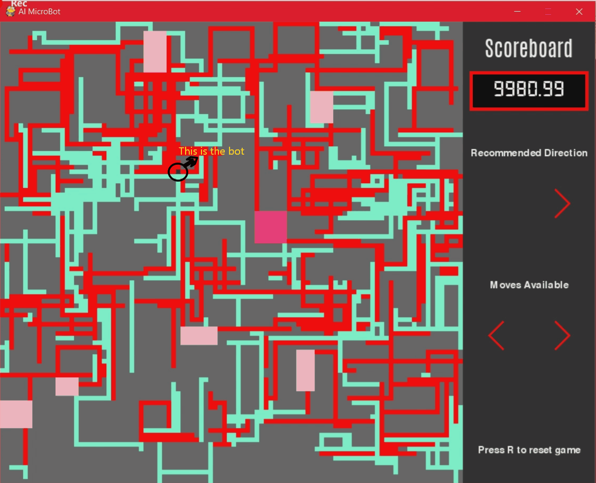
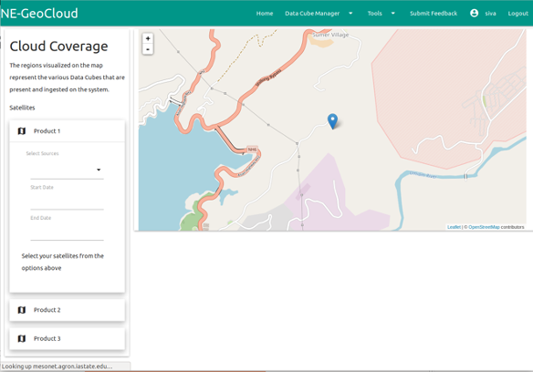
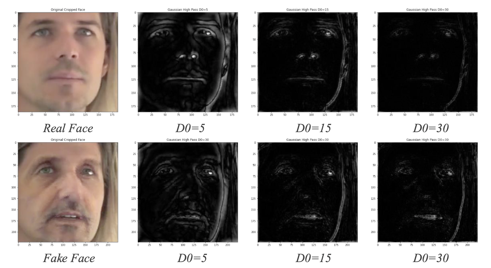
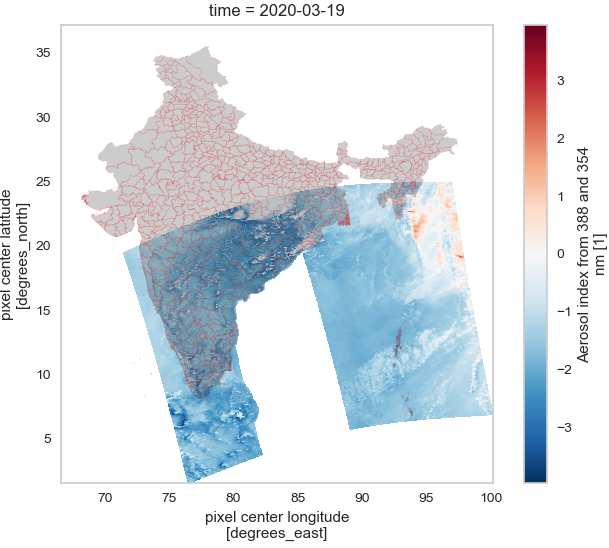
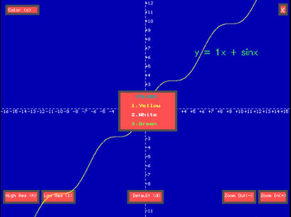

AI-Microbot

A prototype of an Artificially Intelligent Microbot for targeted drug delivery in the human circulatory system.
A map consisting of Arteries, Veins, Capillaries, and Organs each having their own set of characteristics and properties is randomly generated.
The micro-bot, having a set of sensors and electromagnets, will have to traverse the map given a randomly generated starting point and target organ in the most optimal path possible.
The bot's speed in the system will also depend on the thickness of the blood vessel.
The search algorithm will determine the optimal direction to move the bot to reach the target organ fastest.
NE-GeoCloud

NE-GeoCloud aims to facilitate convenient interaction between diverse satellite imagery and scientists without the additional complexity of local data hosting and processing.
Through a user-friendly front-end and a Data Cube-based back-end, NE-GeoCloud reduces the complexity of geospatial algorithm execution on data to simple product/algorithm selection.
The platform also enables scalability of future complex algorithms (machine/deep learning scripts) and larger datasets (tiling, mosaicing, ingestion configuration).
DeepFake Detection

There is a battle raging between those who want to generate the highest quality deepfakes, indistinguishable to the naked eye to manipulate unsuspecting victims, and those who wish to help sift through the barrage of the endless content online and determine what is fake and what is real. In this thesis, we aim to improve the accuracy of Deepfake Detection mechanisms, but without unintentionally aiding DeepFake generators, as these generators can be trained on the latest detectors to improve their own quality of deepfakes. DeepFakes are generally created with the help of GANs or Auto-encoders, and these often leave traces in the high-level frequency domain during the up sampling operations. In this thesis we explore the features present in the frequency domain and utilize the high-level artifacts created by the DeepFake generators to aid in the detection of deepfakes. We also utilize transfer learning to extract the latent features from a lip-reading network to be used in combination with features extracted from high pass filtered images to detect deepfakes.
Air Pollution Analysis

The launch of the Sentinel-5P satellite by the European Space Agency (ESA), in 2017, has helped us observe a wider variety of air pollutants than measured before at a global scale on a daily basis. The TROPOMI sensor mounted on the satellite measures the NO2, SO2, CO, HCHO, CH4, O3 and Aerosol levels of the earth’s atmosphere on a daily basis. In this paper, we use this spatio-temporal data to cluster districts in India based on the average monthly pollution signature emitted by them. A detailed comparison of the various algorithms used to cluster the data is described in the following sections. This clustering can be used to identify districts based on the types of pollutants they emit which will help group similar types of pollution sources such as coal mines, power plants etc.
Graphing Calculator

The aim of this program is to plot the graph of a function taken in from the user.
The user is allowed to enter an explicit function in x which can be trigonometric, polynomial or logarithmic in nature and the corresponding graph of the function will be plotted on the screen.
While viewing the graph of the function, the user can perform the following alterations to the graph-
- Zoom – The user can zoom in and out of the graph and the scale of the axes will be adjusted accordingly.
- Resolution – The user can choose from 3 different resolutions. This will increase or decrease the pixel density of the graph plotted based on the user’s choice.
- Color – The user can change the color of the curve being plotted from the given palette.
The user can also perform the following functions related to the equation read in-
- Store – The current equation gets stored in a text file.
- List – The user can choose to view any of the previously stored equations.
- Delete – The user can delete an equation stored in the list.